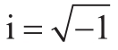
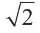

现在来概括一下本章的基本内容。本章集合了对罗马数字的观察、对阿拉伯数字比较反应时的观察，以及对一些人奇怪的数字幻觉的观察，揭示出我们的数字心理表征的迷人特殊性。一个专门负责感知和表征数量信息的器官深深地扎根于我们的大脑中。它与动物和婴儿表现出来的原始的数字能力密切相关。它可以精确表征不超过3的数量；数字变大或相互临近时，则容易被混淆。它还倾向于把数量范围跟空间地图关联起来，从而使空间上延伸的心理数轴的隐喻更加合理化。
显然，与婴儿和动物相比，成年人具有使用文字和数字表达数量的优势。在下一章我们将看到，语言如何简化精确数量的计算和沟通过程。然而，精确的记数法的使用，并不会消除我们生来具有的对数量的连续近似表征。恰恰相反，实验表明，一旦有数字呈现，成人的大脑就会迅速地把它转换成最接近的内部近似量。这种转换是自动的、无意识的。它让我们能够迅速获取一个符号的含义，例如，符号8是7和9之间的一个数量，离10更近，离2更远，等等。
这种数量表征，是我们在进化过程中继承的一种能力，它是我们凭直觉理解数字的基础。如果不是我们已经对数量8有了一种既定的非语言的内部表征，我们可能根本不会赋予数字8一个含义。我们将被限制于纯粹形式化的数字操作，和一台遵循算法而并不理解其意义的计算机没有两样。
我们用来代表数量的数轴显然只支持一种非常有限的数字直觉形式，它只对正整数和它们之间的距离关系进行编码。这或许解释了我们能直觉地掌握整数含义的原因，同时也解释了为什么我们缺乏掌握其他类型数字的直觉。现代数学家认为的“数字”包括零、负整数、分数、像π这样的无理数，以及像

这样的复数。然而，除了最简单的分数，如1/2或1/4，所有这些实数，在过去几个世纪中给数学家们带来了许多概念上的困扰，而且仍然给今天的学生造成很大的困扰。在公元前5世纪之前，对于毕达哥拉斯和其追随者来说，数字仅限于正整数，不含分数或负数。

这样的无理数被认为是违背直觉的。传说希帕索斯（Hippasus）因为证明了无理数的存在，粉碎了毕达哥拉斯整数统治宇宙的观点，因此被抛入大海。尽管丢番图（Diophantes）以及后来的印度数学家都是计算算法的大师，然而他们都不接受负数作为方程的解。在帕斯卡（Pascal）看来，结果是负数的减法“0-4”纯粹是无稽之谈。1545年，意大利数学家卡丹（Cardan）首次将负数的平方根写进了数学公式，这激起了持续一个多世纪暴风雨般的抗议。“虚数”（imaginary numbers）这种叫法正是来自抵制它的笛卡尔，而德·摩根（De Morgan）也认为虚数是“没有意义的，甚至是自相矛盾和荒谬的”。只有在扎实的数学基础建立起来后，这类数字在数学界才获得了认可。我想说明的是，这些数学实体之所以很难被接受，并且如此违背直觉，都是因为它们不属于任何预先存在于我们大脑中的范畴。正整数自发地呈现在我们天生的数量表征中，因此一个4岁的儿童就能够理解正整数。然而，大脑中并不存在对其他各种数字的直接模拟。要真正了解它们，我们必须整合出一个新的心理模型以提供直观的理解。这正是教师所做的事，他们会通过打比方来介绍负数，如温度低于零摄氏度，从银行借来的钱，或者一条向左延伸的线。英国数学家约翰·沃利斯（John Wallis）在1685年引入的复数的具体表征，可以称得上是他送给数学界的一份独特的礼物。他最先认识到，数字可以被设想为一个平面，而“实”数沿水平轴存在。我们的大脑想要在直观模式下起作用需要图像——而在数字理论方面，进化赋予我们的只有对正整数的直觉图像。